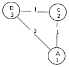

The Best-First Search Algorithm is a basic informed graph-searching algorithm. Best-First makes use of a heuristic (or quickly computed estimate of the cost to reach the goal from each node), called ĥ, to guide its search. The idea behind using a heuristic to guide the search is that the algorithm will not waste time probing paths that do not seem likely to lead to the goal state (node). However, this means that an inaccurate ĥ function can misguide the search, which can result in the search finding a path to the goal that is not optimal. For this reason, one of the greatest challenges in graph searching is to develop a heuristic function that can be quickly computed and that will be a very close estimate of the actual cost to the goal.
The Best-First Search Algorithm maintains an open queue of nodes that is sorted in ascending order according to the each node's ĥ value. Thus, the Best-First Search only uses the heuristic function when deciding which node to close next. This reliance on the ĥ function can cause the Best-First Search Algorithm to close a node with greater-than-optimal cost, as in the following simple example:

In the above diagram, when node D is closed, node A will be added to the open queue with a value of ĥ(A) = 1, and node C will be added to the open queue with a value of ĥ(C) = 2. Since 1 < 2, node A will be closed with the cost of 3. However, the shortest path to node A is DCA, which has a cost of 2. Because the Best-First Search Algorithm only relies upon ĥ when choosing the next node to close, it closed node A before finding the shortest path. Therefore, the Best-First Search is not guaranteed to find the optimal path from the start node to the goal node and can be misled by an errant heuristic function.
This animation shows the execution of the Best-First Search Algorithm in two ways. On the left, the search graph is displayed with changing node colors to indicate opening and closing nodes (more information on the color-coding appears in the next paragraph). The numbers under the nodes' names are the ĥ values for the nodes, and the numbers along the edges are the edge weights. The right side of the window contains a search tree that is built dynamically to show the progress of the Best-First Search Algorithm in searching the graph. The coloring of the tree is coordinated with the coloring of the graph. The numbers under the node names in the search tree are the costs to reach each node along the current path in the tree. Additionally, the open queue and the closed list are displayed at the top of the viewing window. Open nodes are displayed as node_name(predecessor_name-cost+ĥ). Note that the nodes in the open queue are only ordered by their ĥ values (with alphabetical order used to break ties); the cost is included only to help associate the node with the search tree. The closed nodes are presented in a similar format, with the closing node's name appearing first followed by (in parentheses) the name of the node's predecessor and the closing cost of the node. Furthermore, the pseudocode window tracks the algorithm by highlighting the section of code that produced the most recent change in the animation.
The coloring scheme is used to highlight open and closed nodes and also shows recent changes in executing the Best-First Search Algorithm. The darker green node in the graph and tree indicates the node that has just been closed in the current loop. The paler green nodes are nodes that have been closed in previous loops. Darker blue nodes are nodes that have just been added to the open queue in the current loop. Notice that these nodes will always be connected directly to the darker green node by an edge. Nodes that have faded to a paler hue of blue are nodes that are still on the open queue but were added in previous loops. In this way, the blue nodes (both dark and light) in the search tree comprise the entire open queue, making it easy to find the path to the next node that will be closed. Since a node can be added to the open queue from multiple predecessors, a node sometimes is added to the open queue multiple times. When the duplicate node with the lowest cost is taken off the open queue and closed, the other duplicate nodes remain in the open queue until they are removed from the front. When an already-closed node is taken off the open queue in this manner, the search tree removes the blue shading from this node, indicating that it is no longer in the open queue. Finally, when a node is closed, the path to the closing node's predecessor in the graph is highlighted in yellow to show the current path being probed in the search graph.